Nuestro café
En "La Esquina de las Palabras," cada taza de café cuenta una historia de dedicación y artesanía. Nuestro café es cuidadosamente seleccionado de pequeñas fincas locales, donde los granos son cultivados de manera sostenible y cosechados a mano.
El proceso de tostado es realizado en nuestro propio local, garantizando frescura y un perfil de sabor único. Utilizamos métodos de preparación artesanal, como la prensa francesa y el pour-over, para resaltar las notas distintivas de cada variedad de café.
El resultado es una experiencia de café que deleita los sentidos y refleja nuestro compromiso con la calidad y la tradición artesanal.